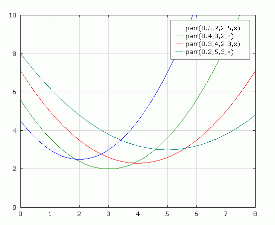

Lebdenje v zraku
Komentar 01, 22.4.2013
Novi rok: 22.5.2013
Legenda:
(+) presega pričakovanja,
(-) nujno potrebno popraviti ali dopolniti,
(P) pripomba - ni je treba nujno upoštevati, bi pa upoštevanje izboljšalo poročilo.
(pst) pravopisna, slovnična ali tiskarska napaka, ki je pregledovalnik črkovanja mogoče ne bo odkril
Splošno
- (+)
Poročilo je temeljito in vsebuje veliko meritev.
- (-)
Predvsem zaključek je potrebno, najbolje, kar na novo napisati.
Teorija
- (-)
"... Ko žogica v curku zaide iz stabilne lege, ..."
Do tu še niste povedali, da je žogica v curku, da je lega sredi curka teoretično ravnovesna, da je stabilna je pa posledica prav tega, da pri izmiku deluje sila nazaj proti njej. Ločite med pojmoma 'ravnovesje' in 'stabilno'.
- (P)
Mogoče bi kar na začetek poglavja postavili opis poskusa in izida poskusa (poudarjam: opis, ne razlago). Mogoče tudi kako sliko z ustreznim podnapisom ali celo napisi na sliki. To bi vam omogočilo, da se potem sklicujete na ta opis.
- (-)
"... Sprememba hja je enaka na obeh straneh, zato ta člen izpustimo ..."
Ne gre za spremembo hja.
- (pst, P, +)
Uporaba rodilnika ("hja") je sicer pravilna, za kar zaslužite pohvalo. Je pa očitno, da je taka raba nadvse nerodna, ko gre za fizikalne oznake. Predlagal bi parafraziranje v "višine (h)".
- (-)
"Fb" ni definirana.
- (-)
Domnevam, da ste izračun Reynoldsovega števila dejansko izvedli in ga imate nekje navedenega. V tem primeru ob trditvi, da ta nekaj pokaže vključite tudi referenco, kje se ta izračuna nahaja, da ga lahko preverimo.
- (-)
"... Takrat je tudi Fu manjša, zato žogica pade nazaj v stabilno lego, kjer je Fu=Fg (če je curek navpičen). ..."
Domnevam, da manjka "če se dvigne više od ravnovesne lege" ali kaj podobnega. Če napišete samo, da pade 'nazaj', je to zelo moteče, ker ne vemo, kaj pomeni 'nazaj', ker niste definirali, kje je bila prej.
- (-)
"... Ko razlika kvadratov hitrosti ni več dovolj velika, da bi nasprotovala pravokotni komponenti sile teže, žogica pade. Z zgornjimi približki lahko preverimo rezultate. ..."
V nagnjenem curku teža kaže navzdol, zato sta obe komponenti teže krivi, da žogica pade. Če upor ne bi več izničil vzporedne komponente, bi prav tako padla. Kaj se zgodi prej je pa drugo vprašanje.
- (-)
Definicija oznak mora biti ob njihovi prvi navedbi. Glede na strukturo poročila bi predlagal, da date skico nad opis teoretičnih principov. Najprej opišete ravnovesje, definirate sile in opišete s čim so povezane, potem pa se spustite v podrobnejši opis principov (kot zdaj), kjer navedete enačbe za sile in vplejete dodatne količine in oznake. Na kaoncu s sklicem na skico ali s ponovno skico (lahko kopijo, ker je spletno poročio) izvedete še izračune oz. izpeljave.
Delo in meritve
- (pst, -)
"... V drugem terminu smo se lotili raziskovanja profilov hitrosti vetra pri različnih višinah in napetostih. Meritve smo opravili z anemometrom, merilcem hitrosti vetra. ..."
Ta stavek je naveden dvakrat. Prvič zgleda odveč in izven konteksta.
- (-)
Manjkajo slike ale reference nanje (ali opisi), kakšne so šobe različnih barv in kaj je razlika med njimi (poleg barve, očitno).
- (-)
Kakšen fit ste uporabili za hitrosti (od napetosti in višine) in zakaj tak? Pri fitih je treba imeti nak smiselen razlog, zakaj prav tak fit. Polinom drugega reda ali tretjega je smiselen, kot Taylorjeva aproksimacije dejanske funkcije, kakršnakoli že je, a tudi to je treba vsaj navesti. Na omejenem področju je namreč veliko grafof lahko zelo podobnih.
- (-)
Fit za profil hitrosti. Gauss? Zakaj? Ste poskusili s parabolo (seveda, samo točke, ki bi lahko ležale na praboli)? Predlagam, da poskusite. Če sem prav prebral, pričakujete paraboličen profil. Torej fitajte s parabolo. Jasno, da mora biti neko prehodno območje med parabolo in nič, a samo to še ni dovolj, da pomislite kar na Gaussa. Poglejte npr. funkcijo
1/(1-x2)2.
Ta je tudi zvončasta, a ni Gaussova. Samo 'zvončastost' še ni dovolj dober razlog, da uporabimo prav Gaussa. Prej bi šlo za kako zaobljeno stopnico v kombinaciji z odrezano parabolo (odrezano tako, da je namesto negativnih vrednosti enaka nič).
(P) Zaobljena stopnica bi bila posledica 'difuzije' hitrosti med navidezno cevjo (curkom) in okoliškim zrakom. Taka zaobljena stopnica je integral kake zvončaste krivulje (ne Gaussove, ker ni analitično integrljiva). Poglejte npr. to funkcijo, ki je sestavljena iz dveh funkcij za Fermi-Diracovo porazdelitev
1/(Exp(a*(x+b))+1)-1/(Exp(a*(x+c))+1)
a je ostrina prevoja (10 je smiselna prva vrednost, potem spreminjajte), b je pozicija, kjer se zgodi prevoj navzgor in c navzdol (seveda, saj gre za premik po x osi). Prva ideja kombinacije bi bil kar produkt odrezane prabole z zaobljeno stopnico pri vrednosti ničel parabole.
- (+,P)
Komentar na graf kota od napetosti.
(+) Najprej pohvala: tu je dejansko smiselno uporabiti črte. Točke so tako zelo narazen in se prepletajo, da bi ilo brez črt z očmi težko slediti točkam. To je tudi edina situacija, ko je dovoljeno uporabiti povezane točke na grafu meritev.
(P) Tako čudna odvisnost od kota za zelen nastavek, ker je ta najmanjši, da misliti sledeče: mogoče se minimum kota po napetosti prestavlja z leve na desno, ko se premer nastavka oža. Rumena ima največji premer? Vijolična ima manjšega in izgleda, da špostane graf proti nizkim napetostim tudi bolj položen (konsistentno s tem, če je minimum blizu na levi. Pri rumeni je graf strmejši (konsistento s tem, če je minimum dlje na levi). Kako globok je ta minimum je tudi pomembno. Poleg pozicije minimuma se verjetno premika tudi višina minimuma. Nekeko tako, kot je na spodnji sliki. To je hipoteza na podlagi vašega grafa. Nisem preštudiral teorije do te mere, da bi vedel, ali je konsistentna s teorijo, oz. ali je v teoriji karkoli, kar nakazuje na tako obnašanje. To je zgolj empirična hipoteza.

- (-)
Glede na to, da na grafu kot pri dveh premerih šobe pada proti nižjim napetostim, je potreben komentar, zakaj niste merili pri še nižjih in ugotovili, če še pada.
Ugotovitve
- (-)
Prvega odstavka ne razumem. Povejte v več stavkih. Povežite misli, sklicujte se na grafe. Npr.: "iz grafa ... vidimo, da je hitrost ... Od tod sklepamo, da ... ".
- (-)
Trditve prvega odstavka ne izgledajo skladne z meritvami. Trdite, da je kot najmanjšehga naklona (zmožnost nagibanja?) neodvisen od hitrosti zraka, kar sodeč po grafu kota od napetosti očitno ne drži. Za različne napetosti dobite različne kote.
- (-)
Iz poročila se nič ne spomnim o tem, kdaj se žogica ustali bliže izpuhu. To izhaja iz grafa razdalje od kota? V tem primeru imamo najmanjši kot za vijolično šobo (graf kota od napetosti), najbližjo lego pa za zeleno šobo (graf razdalje od nagnjenosti). Če zeleno izločimo, je to res. A zakaj bi jo izločili? Če bi jo na podlagi tega, da da večji najmanjši kot, potem lahko na isti podlagi izločimo tudi vse ostale.
- (-)
Govorite o potrjenih hipotezah, a iz zapisanega ni jasno, kaj je hipoteza. Ugotovitve lahko podate zgolj kot ugotovitve, če pa že govorite o hipotezah, točno navedite, katere so te hipoteze.
- (-)
Drugi odstavek je zmedeno napisan. Npr. "... S slamicami zmanjšamo pretok, zato obstaja premer, ki nam še omogoča dobre rezultate, ..."
"zato" tukaj ne zveni logično. To, da s slamicami zmanjšamo premer, ni vzrok da obstaja mejni premer šobe, kot se bere v tem stavku.
- (P)
Namesto "zmožnost nagibanja" uporabite raje izraz "najmanjši kot" ali kaj podobnega.
Sergej Faletič